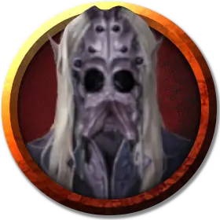

Шунн Шуррет
Shunn Shurreth
Средний Гуманоид (Эльф), законно-злой, именной НИП

Класс Доспеха 18 (проклепанная кожа, щит)
Хиты 71 (11к8 + 22)
Скорость 30 футов
| мод | спас | ||
|---|---|---|---|
| СИЛ | 13 | +1 | +1 |
| ЛОВ | 18 | +4 | +7 |
| ТЕЛ | 14 | +2 | +5 |
| мод | спас | ||
|---|---|---|---|
| ИНТ | 11 | +0 | +0 |
| МДР | 13 | +1 | +4 |
| ХАР | 12 | +1 | +1 |
Навыки Восприятие +4, Скрытность +10
Чувства тёмное зрение 120 футов, пассивное Восприятие 14
Языки Подземный, Эльфийский
Опасность 5 (1800 опыта)
Бонус мастерства +3
Особенности
Наследие фей. Дроу совершает с преимуществом спасброски от очарования, и магия не может его усыпить.
Врождённое колдовство. Базовой характеристикой дроу является Харизма (Сл спасброска от заклинания 12). Он может накладывать следующие заклинания, не нуждаясь в материальных компонентах:
• Неограниченно: пляшущие огоньки [dancing lights];
• 1/день каждое: левитация [levitate] (только на себя), огонь фей [faerie fire], тьма [darkness].
Паучье лазание. Дроу может лазать по сложным поверхностям, включая потолки, без совершения проверок характеристик.
Чувствительность к солнечному свету. Находясь на солнечном свету, дроу совершает с помехой броски атаки, а также проверки Мудрости (Восприятие), полагающиеся на зрение.
Действия
Мультиатака. Дроу совершает две атаки коротким мечом.
Короткий меч. Рукопашная атака оружием: +7 к попаданию, досягаемость 5 футов, одна цель. Попадание: Колющий урон 7 (1к6 + 4) плюс урон ядом 10 (3к6).
Ручной арбалет. Дальнобойная атака оружием: +7 к попаданию, дистанция 30/120 футов, одна цель. Попадание: Колющий урон 7 (1к6 + 4), и цель должна преуспеть в спасброске Телосложения Сл 13, иначе будет отравленной в течение 1 часа. Если спасбросок провален на 5 и более, цель также становится бессознательной, пока отравлена таким образом. Цель приходит в сознание, если получает урон или другое существо действием разбудит её.
Реакции
Парирование. Дроу добавляет 3 к КД против одной рукопашной атаки, которая должна попасть по нему. Для этого дроу должен видеть атакующего, и должен использовать рукопашное оружие.
Описание
Дроу, жрица Лолс, наложила проклятие на Шунна и отправила его в изгнание после того, как он вызвал ее недовольство. Проклятие частично превратило его в паука, дав ему восемь красных паукообразных глаз, полный клыков рот, и растущую из тонких конечностей черную щетину. Заклинания снятие проклятья [remove curse] или высшее восстановление [greater restoration] вернут естественный вид Шунна, но он не хочет снимать с себя проклятие.
Его ужасающая внешность вселяет страх в сердца его подчиненных и заслужила благосклонность Занатара. Шунн считает, что возвращение к обычной внешности может ослабить его влияние на банду и понизить статус в Гильдии Занатара.
Шунн двигается с жуткой грацией и в разговорах с авантюристами предпочитает дипломатию насилию.